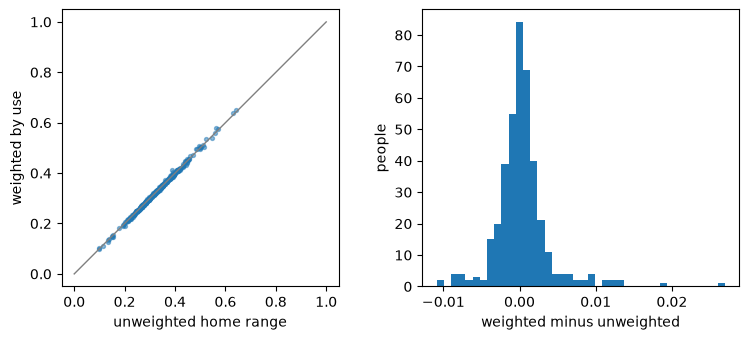

Weighting matters: exposure with and without the weights#
Question. How green is a person’s surroundings? The answer depends on two choices you should make deliberately: how to weight the cells of a person’s raster, and what a gap in the green map means.
import tempfile
import numpy as np, pandas as pd, matplotlib.pyplot as plt
import entityraster as er
from entityraster import synth
# synthetic example data: people with activity-space rasters, plus environment layers
data = synth.make_dataset(tempfile.mkdtemp(), n=400, seed=31)
gdf = data.people
green = data.env_green # greenness 0..1 with unobserved patches (cloud gaps)
Three ways to weight#
col = gdf["activity_space"] # the raster column
# the same exposure under three weighting schemes: by use, 1 inside the home range, 1 on every cell
exp = pd.DataFrame({
"weighted by use (density)": col.rst.exposure(green, outside="unknown"),
"unweighted home range": col.rst.exposure(green, outside="unknown", weighting="binary"),
"every cell equally": col.rst.exposure(green, outside="unknown", weighting="none"),
})
exp.describe().round(3).loc[["count", "mean", "std"]]
| weighted by use (density) | unweighted home range | every cell equally | |
|---|---|---|---|
| count | 399.000 | 399.000 | 399.000 |
| mean | 0.327 | 0.326 | 0.326 |
| std | 0.080 | 0.079 | 0.079 |
# left: weighted vs unweighted per person (grey line = no difference); right: distribution of the difference
fig, ax = plt.subplots(1, 2, figsize=(9, 3.6))
ax[0].scatter(exp.iloc[:, 1], exp.iloc[:, 0], s=8, alpha=0.5); ax[0].plot([0, 1], [0, 1], color="grey", lw=1)
ax[0].set_xlabel("unweighted home range"); ax[0].set_ylabel("weighted by use"); ax[0].set_aspect("equal")
# people with no estimate (NaN) are dropped
diff = (exp.iloc[:, 0] - exp.iloc[:, 1]).dropna()
ax[1].hist(diff, bins=40); ax[1].set_xlabel("weighted minus unweighted"); ax[1].set_ylabel("people");

Weighting moves each person’s exposure toward the cells they use most (typically near home). Whether that matters for your question is an empirical matter: here the size of the difference is
diff.abs().describe().round(3)[["mean", "50%", "max"]]
mean 0.002
50% 0.001
max 0.027
dtype: float64
What a gap in the green map means#
# gaps in the green map dropped ("unknown") versus counted as no green ("zero")
both = pd.DataFrame({"unknown": col.rst.exposure(green, outside="unknown"), "zero": col.rst.exposure(green, outside="zero")})
# flag people whose result depends on that choice
changed = (both["unknown"] - both["zero"]).abs() > 1e-9
print(f"{changed.mean():.1%} of people get a different exposure; {both['unknown'].isna().sum()} get none at all under 'unknown'")
24.2% of people get a different exposure; 1 get none at all under 'unknown'
Under "zero" a cloud gap counts as no green, which pulls exposure down for the people whose activity space touches a gap. Under "unknown" those cells are left out, and a person whose entire raster lies in a gap
has no estimate (NaN) rather than a wrong one.
Does it change a comparison between groups?#
# two comparison groups
gdf["young"] = gdf["age"] <= 40
gdf["old"] = gdf["age"] > 60
# fixed seed so the bootstrap is reproducible
rng = np.random.default_rng(0)
# difference in mean exposure (old minus young) with a bootstrap 95% interval
def contrast(series):
a, b = series[gdf["old"]].dropna().values, series[gdf["young"]].dropna().values
# resample each group with replacement 1000 times and recompute the difference
boot = [rng.choice(a, a.size).mean() - rng.choice(b, b.size).mean() for _ in range(1000)]
return pd.Series({"old − young": a.mean() - b.mean(), "ci low": np.percentile(boot, 2.5), "ci high": np.percentile(boot, 97.5)})
# one row per reading of a gap
pd.DataFrame({"unknown": contrast(both["unknown"]), "zero": contrast(both["zero"])}).T.round(4)
| old − young | ci low | ci high | |
|---|---|---|---|
| unknown | -0.0202 | -0.0374 | -0.0039 |
| zero | -0.0039 | -0.0237 | 0.0171 |
If the interval contains 0 under both readings, the conclusion does not hinge on the choice; if it does under one and not the other, report both. The point of the mandatory outside= argument is that you look.